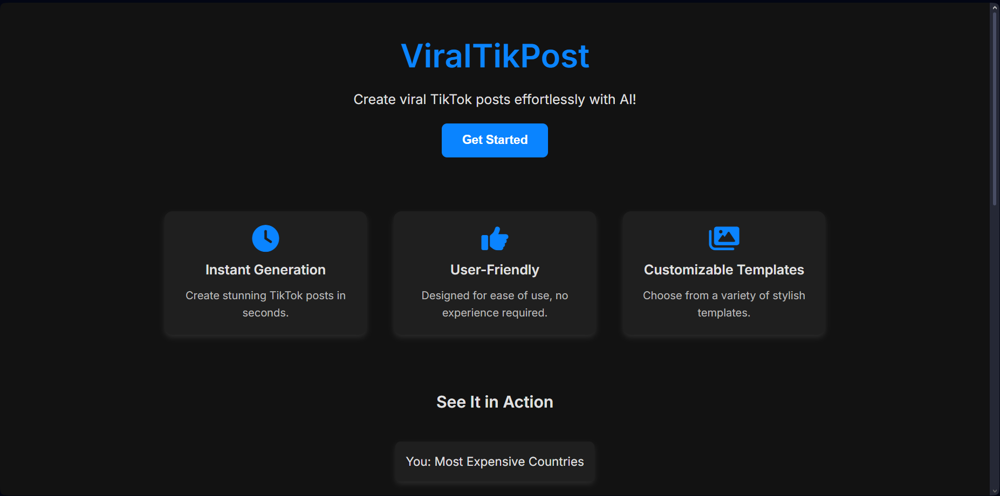

Are you finding it hard to keep up with TikTok's ever-changing trends? Do you want to create viral content without spending hours trying to figure out what works? You're in luck because ViralTikPost is here to save the day!
ViralTikPost is an AI-powered tool designed to help you create engaging, trendy TikTok posts in just a few seconds. Whether you're a business aiming to expand your reach, or an individual looking to build a following, this generator simplifies the entire content creation process. No more guessing what's viral—just pick a template, enter your instructions, and let ViralTikPost do the rest!
ViralTikPost is a revolutionary TikTok Post Generator that creates content specifically designed to go viral on TikTok. It comes pre-loaded with templates that have been tested and proven to capture the TikTok audience's attention. All you have to do is choose a template, give a simple instruction to the AI, and within seconds, you'll have a ready-to-post video tailored to your needs.
The platform uses the latest TikTok trends and algorithms to generate posts that not only fit your style but are also aligned with what TikTok users are currently engaging with.
Here are the top reasons why you should use ViralTikPost to grow your TikTok presence:
One of the standout features of ViralTikPost is its collection of viral templates. These are designed based on extensive research into what works on TikTok. No more trial and error. Simply select a template that fits your style or niche, and you're already halfway to creating a viral post.
ViralTikPost leverages cutting-edge AI technology to help you create unique posts. You don’t need to be a video editing pro or have a deep understanding of TikTok trends. The AI helps you by suggesting the best formats, music, and filters for your specific content, ensuring your post grabs attention immediately.
Time is of the essence, especially when it comes to keeping up with TikTok's fast-paced environment. ViralTikPost speeds up the process of content creation by offering ready-made ideas and templates. In less than 10 seconds, you’ll have a TikTok post ready for upload!
Feeling stuck? No worries! ViralTikPost sparks creativity with its idea generation capabilities. Whether you’re trying to create something funny, inspirational, or promotional, the platform suggests ideas based on current trends that resonate with TikTok audiences.
The beauty of ViralTikPost lies in its simplicity. Here's a step-by-step guide to creating a viral TikTok post using this powerful tool:
ViralTikPost offers a variety of viral templates designed for different niches—whether it's fashion, humor, education, or fitness. Choose one that aligns with the type of content you want to create.
After selecting your template, simply provide an instruction to the AI. This could be as simple as “Create a funny dance video” or “Make an inspirational quote video.” The AI will take this input and generate the perfect post based on your request.
While the AI provides you with a complete post, you can still customize elements like text, music, and filters to give it your personal touch. This ensures that the content is not only viral but also uniquely yours.
Before posting, you can preview your creation to ensure it's exactly how you want it. If necessary, you can edit the post further, tweaking small details until it’s perfect.
Once you're happy with your post, simply export it. ViralTikPost ensures that your video is optimized for TikTok’s platform, meaning it's ready to go viral as soon as you hit upload!
TikTok is one of the most popular social media platforms in the world, with over a billion active users. Here's why creating consistent, engaging TikTok posts is crucial:
TikTok's algorithm is designed to give content the chance to go viral. A single well-crafted post can reach millions of people, making it a powerful tool for individuals, businesses, and influencers looking to grow their online presence.
TikTok isn’t just about posting content; it’s about interacting with your audience. Posts that encourage likes, shares, comments, and duets can build a loyal following over time. ViralTikPost ensures that the content you produce drives engagement, helping you build a community around your brand.
With TikTok setting trends across social media, it’s crucial to stay on top of what’s popular. ViralTikPost keeps your content aligned with current trends, ensuring that your posts are not only engaging but also relevant to the ever-evolving TikTok audience.
For businesses, TikTok offers immense marketing potential. By leveraging viral posts, you can showcase your products, services, or brand personality in a creative way. ViralTikPost helps you create promotional content that doesn’t feel like an ad, giving you a better chance to connect with your audience and drive sales.
ViralTikPost is the ultimate tool for anyone looking to grow their TikTok presence effortlessly. With viral templates, AI-powered creativity, and a simple, user-friendly interface, creating engaging TikTok posts has never been easier.
Ready to take your TikTok game to the next level? Give ViralTikPost a try and watch your content go viral in no time!
Try ViralTikPost Now